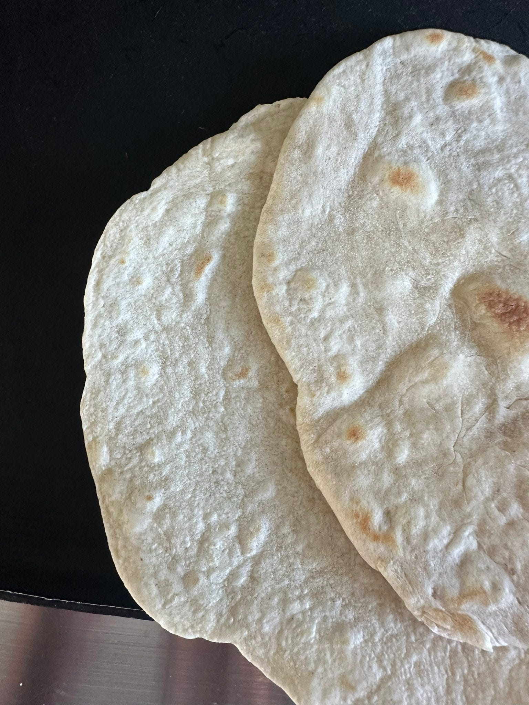

Homemade Flour Tortillas
Homemade-Flour-Tortillas • Makes 8 • Bread

Simple flour tortillas made with pantry ingredients and olive oil. They cook in minutes, puff on a hot pan, and make store-bought tortillas feel like a compromise.
Ingredients
- 1½ cups all-purpose flour
- ½ tsp baking powder
- ½ tsp salt
- ½ cup warm water
- 3 tbsp + 1 tsp olive oil
Method
1. Make the dough
- In a bowl, mix the flour, baking powder, and salt.
- Add the warm water and olive oil.
- Knead for a few minutes until the dough is smooth and elastic.
2. Rest
- Divide the dough into 8 equal pieces and roll into balls.
- Let rest for 15 minutes to relax the gluten (this makes rolling easier).
3. Roll and cook
- On a lightly floured surface, roll each ball out thin.
- Heat a dry pan (cast iron works well) over high heat.
- Cook each tortilla about 45 seconds per side, until it puffs slightly and develops light brown spots.
- Stack cooked tortillas in a towel to keep warm and flexible.
Notes: If the dough springs back as you roll, let it rest another 5 minutes. Use these for tacos, quesadillas, wraps, or just tear and eat straight off the pan.